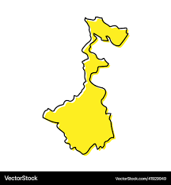
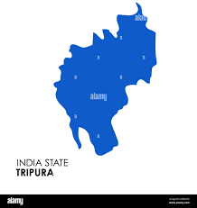
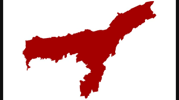

BENGALI
Major States in India Speaking Bengali are:
- West Bengal
- Tripura
- Assam
- Jharkhand
- Andaman & Nicobar Islands
West Bengal
About West Bengal
Click on the Image to Know More

Tripura
About Tripura
Click on the Image to Know More

Assam
About Assam
Click on the Image to Know More

Jharkhand
About Jharkhand
Click on the Image to Know More

Andaman & Nicobar Islands
About Andaman & Nicobar Islands
Click on the Image to Know More

Scan For Feedback